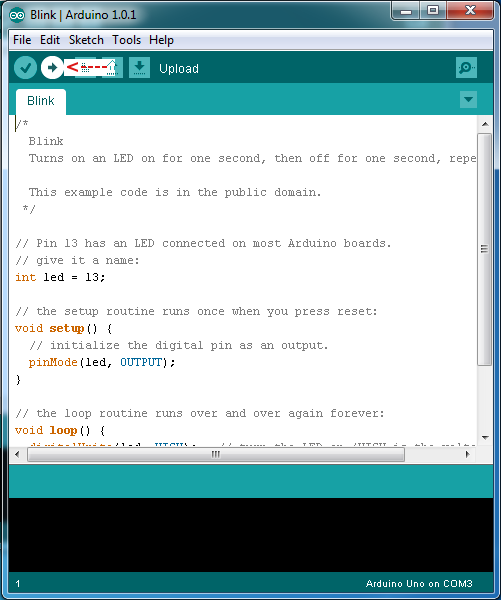

Microcontrollers were fifth although the quarter ended before we could go too indepth with them. The ones we used in class were called Arduinos and using them seems somewhat like html but with more numerical values. We'll likely do more with them next quarter which seems interesting assuming I can figure out the software,
